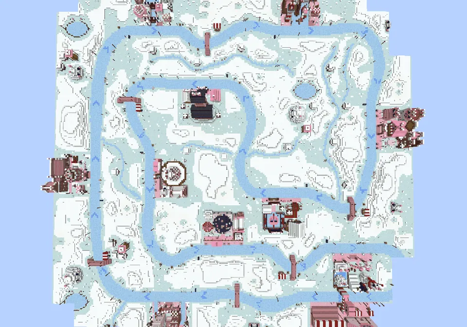
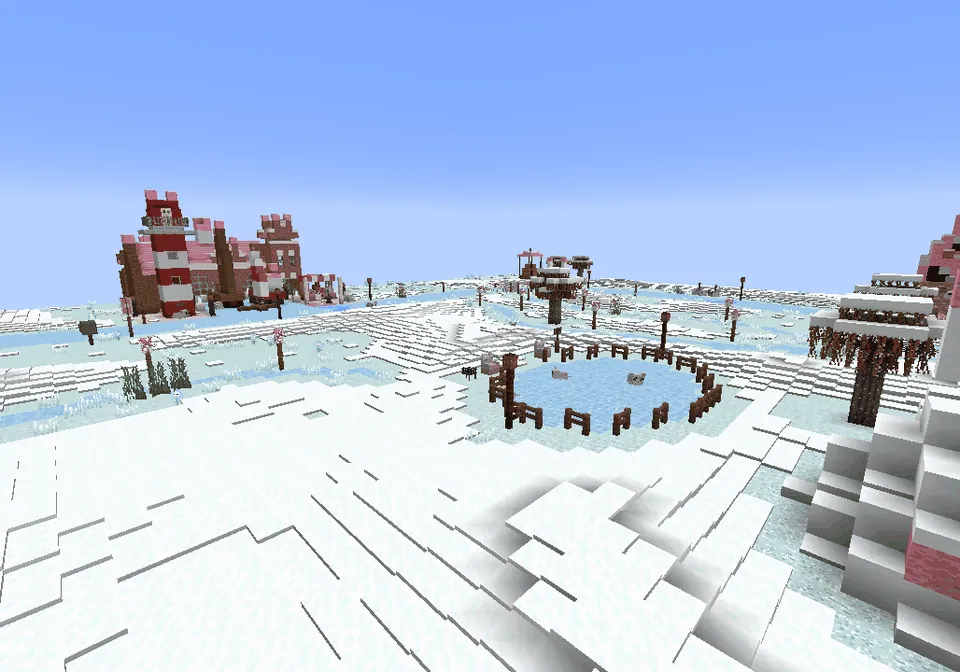
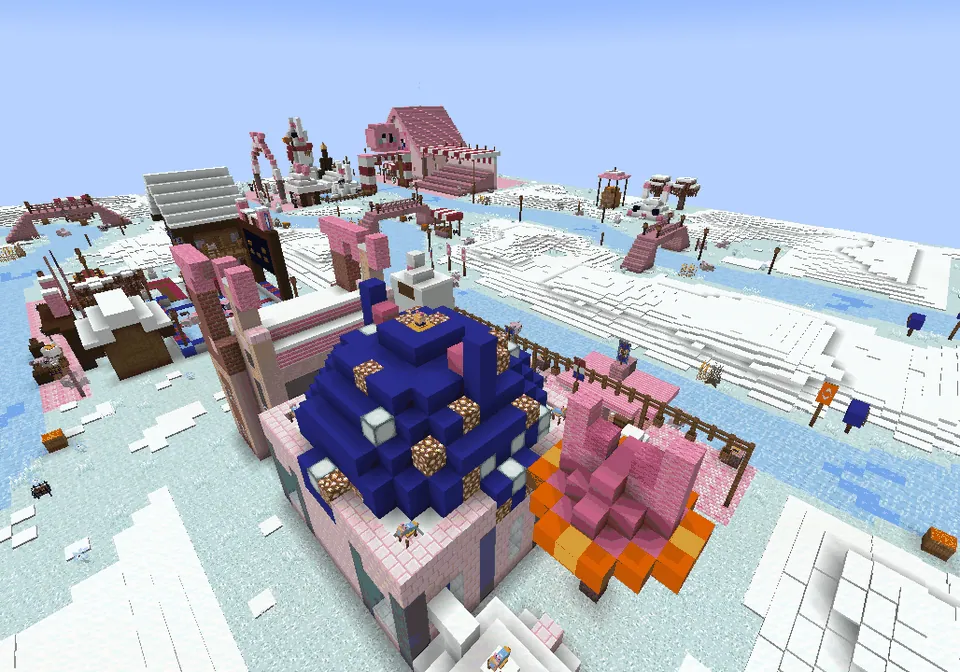
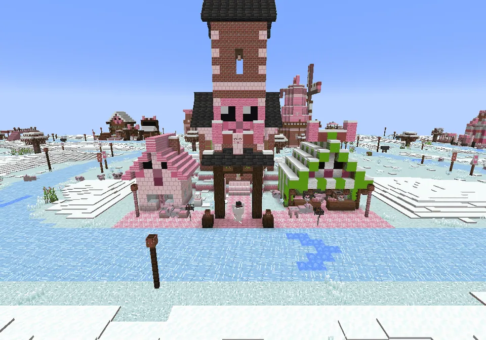
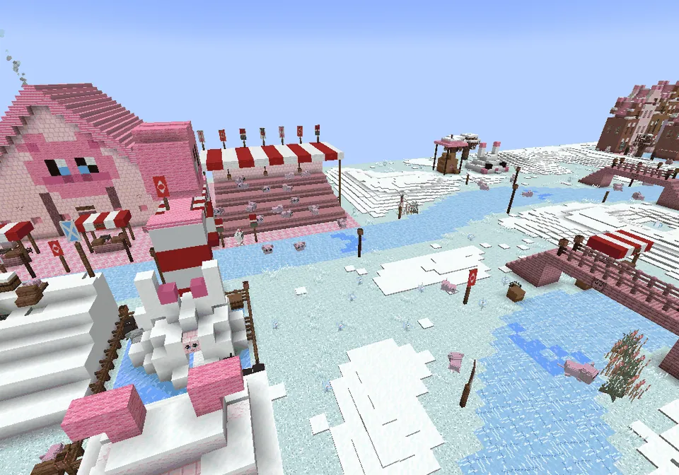
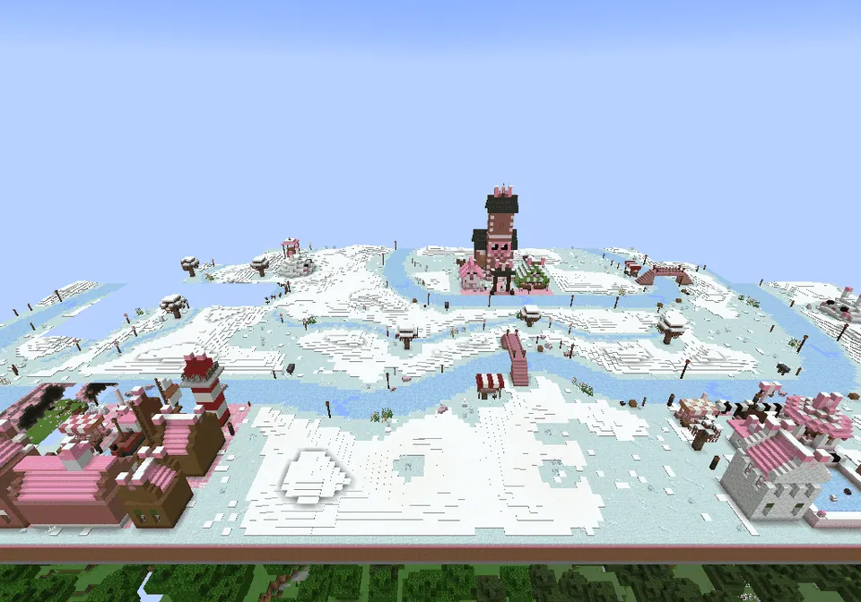

Een bevroren kanaal dat door de Guhpolder kronkelt, langs elf dorpjes, slootjes met knotwilgen en sneeuwheuveltjes: schaatsen, stempels en warme chocovet!
Elf-GuhjestochtGuhpolderGuhpolder
A frozen canal past eleven villages: the biggest guh building of all.Een bevroren kanaal langs elf dorpjes: het grootste guhbouwwerk van allemaal.
A skating tour past eleven villagesEen schaatstocht langs elf dorpjes
Rebuilt with a winding canal, evenly spread villages, ditches and snowy hills. The showpiece, and the biggest guh building of all (256 by 256 blocks): a frozen canal of almost 1300 blocks that winds through the Guhpolder past eleven little villages, each different, full of food and drink, Dutch buildings, winter fun and cheering audience guhs (164 of them). Start and finish are in Guhwarden, with a chequered start line, a start arch and blue arrows on the ice. Along the way: bridges, place-name boards before every village, koek-en-zopie stalls, hooibergen with a guh face, skating ponds, snowman-guhs, flags and straw bales. Find it with the superkompas (Minigames); there is one in about two of every three polders.
Opnieuw gebouwd, met een kronkelend kanaal, mooi verspreide dorpjes, slootjes en sneeuwheuveltjes. Het pronkstuk, en het grootste guhbouwwerk van allemaal (256 bij 256 blokken): een bevroren kanaal van bijna 1300 blokken dat door de Guhpolder slingert langs elf dorpjes, allemaal anders, vol eten en drinken, Hollandse gebouwtjes, winterpret en juichend guhpubliek (164 guhs). Start en finish zijn in Guhwarden, met een geblokte startstreep, een startboog en blauwe pijlen op het ijs. Onderweg: bruggetjes, plaatsnaamborden voor elk dorp, koek-en-zopiekraampjes, hooibergen met een guhgezicht, ijsbaantjes, sneeuwpopguhs, vlaggetjes en strobalen. Vind hem met het superkompas (Minigames); ongeveer twee op de drie polders hebben er een.
- WhereWaar
- Guhpolder
- Guh
- Schaatsmeester Guhglij
- CoinMunt
 elfstempel
elfstempel
A winding canal through a snowy polderEen kronkelend kanaal door een besneeuwde polder
- The canal now winds like a real river (a smooth loop with meanders, 1278 blocks) and is 2 to 5 blocks wide per bank, with natural, slightly ragged banks (always wide at villages, bridges and the start).Het kanaal kronkelt nu als een echte rivier (een zachte lus met bochtjes, 1278 blokken) en is per oever 2 tot 5 blokken breed, met natuurlijke, een beetje rafelige oevers (altijd breed bij de dorpjes, de bruggetjes en de start).
- The eleven villages are spread evenly along the whole route (every 100 to 131 blocks), turned to face the ice.De elf dorpjes liggen mooi verspreid langs de hele route (elke 100 tot 131 blokken), met hun voorkant naar het ijs.
- The ice grid is gone: seven wobbly ditches with rows of knotwilgen run through the fields (some into the canal), with groups of knotwilgen, reed clumps and a guh-molentje here and there.Het ijsrooster is weg: zeven kronkelige slootjes met rijen knotwilgen lopen door de weilanden (een paar tot in het kanaal), met groepjes knotwilgen, rietpollen en hier en daar een guh-molentje.
- Gentle snowy hills (at most 2 blocks, snow blocks and snow layers), flat under every building and at the ice.Zachte sneeuwheuveltjes (hooguit 2 blokken, sneeuwblokken en sneeuwlaagjes), vlak onder elk gebouwtje en bij het ijs.
- Lamps and flags in a natural rhythm, straw bales and vuurkorven in the sharp bends, two audience groups per stretch (177 guhs), koek-en-zopie stalls, 6 bridges, 23 boosts and 345 night lights.Lampjes en vlaggetjes in een natuurlijk ritme, strobalen en vuurkorven in de scherpe bochten, twee groepjes publiek per stuk (177 guhs), koek-en-zopiekraampjes, 6 bruggetjes, 23 boosts en 345 nachtlampjes.
- Your skates work on the whole tour now: all of the structure plus 16 blocks around it. Skate off it and you first get a friendly warning and a few seconds to come back.Je schaatsen werken nu op de hele tocht: het hele bouwwerk plus 16 blokken eromheen. Schaats je eraf, dan krijg je eerst een lieve waarschuwing en een paar seconden om terug te komen.
The Elf-Guhjestocht, rebuiltDe Elf-Guhjestocht, opnieuw gebouwd

From aboveVan bovenaf
The loop through the polder.De lus door de polder.

Snowy hills and ditchesSneeuwheuveltjes en slootjes
A skating pond between the fields.Een ijsbaantje tussen de weilanden.

A bendEen bocht
A village on the outside of a bend.Een dorpje aan de buitenkant van een bocht.

Knabbelsward
Village 8, facing the ice.Dorp 8, met zijn voorkant naar het ijs.

The startDe start
Guhwarden with the start arch.Guhwarden met de startboog.

OverviewOverzicht
Villages spread along the whole route.Dorpjes verspreid langs de hele route.
The new layout comes in newly generated Elf-Guhjestochten; an old one keeps its layout, but the skates fix works there too.
De nieuwe indeling komt in nieuw gemaakte Elf-Guhjestochten; een oude houdt zijn indeling, maar de schaatsfix werkt daar ook.